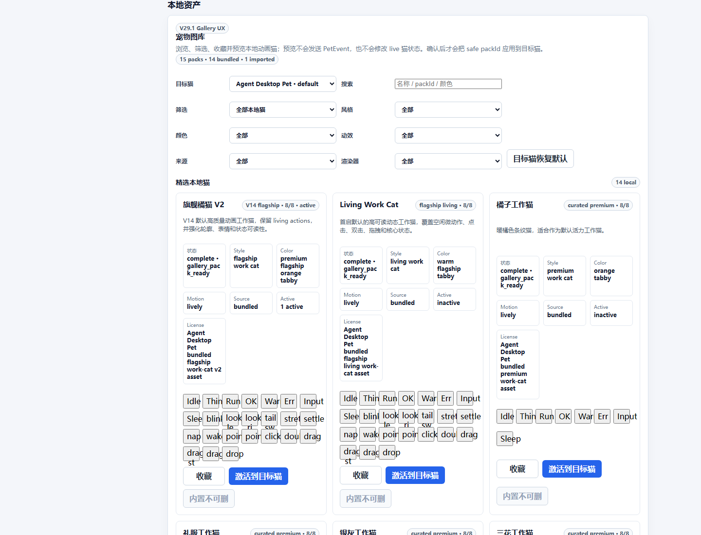
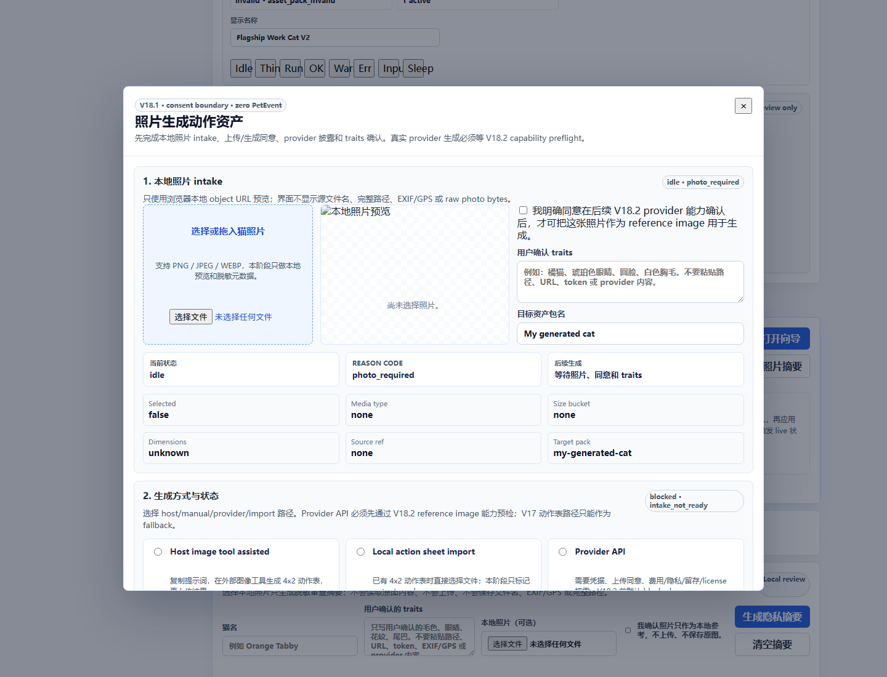

目标架构
Post-V30 目标是把 V30 语义 2D 动作质量边界落到可继续开发的本地运行基线：真实桌面 runtime、bridge、petctl、managed workflow、前端切片和 Rust/Tauri/HTTP bridge 切片都有证据。
passed scoped
日期：2026-06-24。本报告使用 Windows Chrome headless + Chrome DevTools Protocol 自动访问 Vite 页面并采集截图。未启动可见 Tauri 桌面窗口，未抢占用户焦点。
Post-V30 目标是把 V30 语义 2D 动作质量边界落到可继续开发的本地运行基线：真实桌面 runtime、bridge、petctl、managed workflow、前端切片和 Rust/Tauri/HTTP bridge 切片都有证据。
前端设置页集成多猫实例、Codex 工作猫、本地资产、照片到 2D 向导、诊断导出和边界说明；Rust/Tauri 侧提供 runtime setup、HTTP bridge、实例、事件、诊断和安全拒绝路径。
自动化覆盖设置页概览、资产/图库入口、照片 2D 向导入口与弹窗、诊断/边界区、移动视口布局。真实 bridge E2E 已由前序 evidence 覆盖，本轮不重复启动桌面窗口。
| 检查项 | 结果 | 说明 |
|---|---|---|
| 设置主页面渲染 | 通过 | 识别到标题：设置与工作猫管理 |
| 概览卡片 | 通过 | 4 个 overview cards |
| 导航入口 | 通过 | 6 个 settings nav links |
| 照片 2D 向导 | 通过 | 识别到向导入口，并在场景步骤中打开向导弹窗；见 04 截图。 |
| 诊断入口 | 通过 | 诊断区可见，并使用 mock 脱敏状态 |
| 禁用 ready 声明 | 通过，命中边界语境 | 命中 forbidden ready 词时，自动检查到“不声明/不得声明/不代表/not-ready”等边界语境；仍不作为 ready claim。 |






| 优先级 | 问题 / 风险 |
|---|---|
| Medium | 01 desktop screenshot shows the Codex recommended command wrapping one character per line in a narrow card. This is readable only with effort and should be fixed with a wider/preformatted command container or horizontal scrolling. |
| Medium | 01 desktop screenshot shows large blank vertical space inside the first-run cards before controls and demo content. The path is visible, but scanability is weaker than the target quick-start experience. |
| Low | 06 mobile screenshot shows long visual-asset select text pressing into the right-side control area. The layout remains usable, but long pack labels need tighter responsive handling. |
| Medium | 本轮是 headless Chromium + Tauri mock 的 UI smoke，不能证明原生 Tauri overlay、托盘、窗口层级或桌面透明点击穿透。 |
| Medium | 截图证明设置页、资产、个性化和诊断入口可渲染，但没有对每个按钮执行完整数据变更回归。 |
| Low | 浏览器 mock 使用脱敏本地测试数据，不代表真实 provider、任意猫自动生成、生产发布或跨平台能力。 |
{
"title": "设置与工作猫管理",
"overviewCards": 4,
"navLinks": 6,
"instanceCards": 2,
"galleryCards": 15,
"assetPreviewVisible": true,
"photoWizardVisible": true,
"diagnosticsVisible": true,
"forbiddenReadyClaimsVisible": true,
"forbiddenReadyClaimContext": true,
"bodyTextSample": "AGENT DESKTOP PET\n设置与工作猫管理\n\n管理桌宠实例、Codex 工作猫、个性化资产和本地诊断。\n\n静音\n桌宠实例\n2/12\n2 只可见 · 容量正常\n资产包\n1\n1 个已激活到实例\n当前状态\n空闲\n队列 0 · 声音开启\n事件桥\n在线\nAPI 已启用；127.0.0.1:17321；队列 0/32；token 已配置。\n首次上手\n快速创建工作猫\n\n不读 README 也能先看到一只猫。普通桌宠路径不超过 3 步；Codex 工作猫路径不超过 5 步。\n\n1. 先看到一只活猫\n视觉资产\n旗舰橘猫 V2 · premium flagship orange tabby\nLiving Work Cat · warm flagship tabby\n橘子工作猫 · orange tabby\n礼服工作猫 · tuxedo\n银灰工作猫 · silver\n三花工作猫 · calico\n奶油工作猫 · cream\n蓝灰工作猫 · blue gray\n黑曜工作猫 · black\n雪白工作猫 · white\n橘白工作猫 · ginger white\n狸花工作猫 · brown tabby\n丁",
"photoWizardModalOpenedDuringScenario": true
}